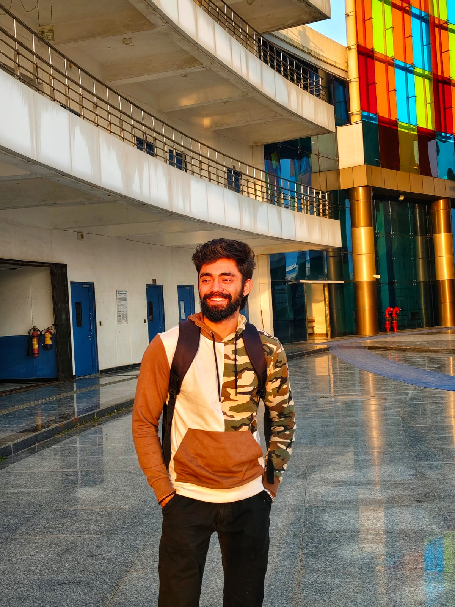

01
EARLY UNIVERSE
Cosmic Microwave Background
Reading information carried to us from the early Universe, with particular interest in anisotropies and secondary signals such as the kinetic Sunyaev–Zel’dovich effect.
COSMOLOGY RESEARCHER · IIT INDORE
Tracing structure from the early Universe to the cosmic web.
CMB anisotropies · Large-scale structure · High-redshift Universe
Seeking PhD opportunities · 2027
01 / FROM FLUCTUATIONS TO STRUCTURE
That transition from tiny primordial fluctuations to galaxies, clusters and the cosmic web is the thread that connects my research interests.
02 / WHAT I STUDY
01
EARLY UNIVERSE
Reading information carried to us from the early Universe, with particular interest in anisotropies and secondary signals such as the kinetic Sunyaev–Zel’dovich effect.
02
STRUCTURE FORMATION
Understanding how primordial density fluctuations grow into filaments, clusters, voids and the large-scale architecture of the cosmic web.
03
COSMIC DAWN
Studying the distant Universe, from early galaxies to the gas between them, to understand how the Universe has evolved and what we still have left to discover.
COSMIC DAWN / FIRST STRUCTURE
As gravity amplifies tiny density differences, diffuse matter starts to organize into halos, filaments and the environments where the first galaxies can grow.
03 / Research Projects
MASTER'S THESIS · kSZ · 3D CNN
How accurately can deep learning reconstruct galaxy peculiar velocities, and how well do these models generalise across different cosmological simulations?
I am building a 3D CNN pipeline for halo velocity reconstruction using CAMELS-TNG and public IllustrisTNG simulations, with emphasis on cross-simulation and resolution robustness.
COLLABORATION · COSMIC WEB · GNN
Can a graph neural network learn to classify cosmic-web structures and generalize across different cosmological simulations?
I am developing graph models on CAMELS catalogues and testing zero-shot transfer from TNG to SIMBA and Astrid to quantify domain shift and generalization.
Early Research Experience
Early research experiences that strengthened my scientific understanding, broadened my exposure to different areas of research, and helped me develop a foundation in computational and analytical methods.
HIGH-REDSHIFT UNIVERSE · IGM
Built a first-principles radiative-transfer pipeline from hydrodynamic simulation output to model Lyman-α optical depth and transmitted flux.
REIONIZATION · 21 CM · GPR
Developed a Gaussian-process regression workflow to isolate a faint 21-cm EoR signal from astrophysical foregrounds in simulated SKA-Low data.
04 / THE QUESTION
New observations of the high-redshift Universe continually test the limits of our cosmological picture. I am fascinated by the possibility that observations we cannot yet fully explain may be pointing toward physics we have not yet understood.
My interest in cosmology comes from wanting to investigate those boundaries where observation, computation and our current understanding of the Universe meet.
05 / JOURNEY
EARLY INTEREST
My interest in astronomy began during my school years, driven by a curiosity about planetary science, space exploration, and the broader Universe. The Martian was among the early influences that strengthened this interest.
2020 — 2024
My undergraduate education in computer engineering provided a strong foundation in programming, computational methods, and machine learning. An undergraduate project on galaxy classification using machine learning allowed me to connect this technical background with my interest in astrophysics.
2025 — PRESENT
Currently pursuing an MSc in Astronomy at IIT Indore, with research interests in computational cosmology, large-scale structure, and the cosmic microwave background. My work focuses on applying numerical simulations, statistical methods, and machine learning to astrophysical problems.
2027 ONWARDS
Seeking PhD opportunities for 2027 in computational cosmology, CMB science, large-scale structure and the high-redshift Universe.
06 / RESEARCH METHODS & TOOLS
Working with cosmological simulation catalogues, density fields, and HDF5 datasets, using Fourier techniques, power-spectrum estimation, and scientific visualization to analyse large-scale structure.
Applying PyTorch, 3D convolutional neural networks, graph neural networks, and graph-based transformer architectures to modelling and inference problems in astrophysics.
Using Gaussian processes, Bayesian inference, nested sampling, and statistical signal extraction for parameter estimation, model evaluation, and uncertainty quantification.

07 / ABOUT
My interest in astronomy goes back to childhood, although my academic path initially led me to computer engineering. What began as a different direction eventually became a valuable foundation for my work in computational astrophysics. Today, I bring that background in programming and machine learning to the cosmological questions that first drew me toward science.
I am drawn to questions at both extremes: the structure of the Universe at its largest scales, and the nature of the mind trying to understand it.
What I find most compelling about cosmology is how much remains unknown, even after decades of remarkable discoveries. For me, research is as much about learning to ask better questions as it is about finding answers.
08 / PERSONAL PHILOSOPHY
अहं ब्रह्मास्मि
Aham Brahmāsmi
Beyond studying the Universe scientifically, I am fascinated by humanity's deeper relationship with it. By consciousness, existence and what it means to be part of the cosmos we are trying to understand.
09 / ACADEMIC MILESTONES
EDUCATION
Indian Institute of Technology Indore
2025—Present
EDUCATION
Gujarat Technological University
2020—2024
IIT JAM PHYSICS · 2025
National-level examination
GATE PHYSICS · 2025
National-level examination
OPEN TO PHD OPPORTUNITIES · 2027
I am interested in pursuing a PhD in computational cosmology, with a focus on the cosmic microwave background, large-scale structure, and the high-redshift Universe. I am particularly interested in research that combines numerical simulations, statistical inference, and machine learning to investigate cosmological questions.
10 / CONTACT
PhD opportunities, research collaborations and conversations about cosmology are always welcome.